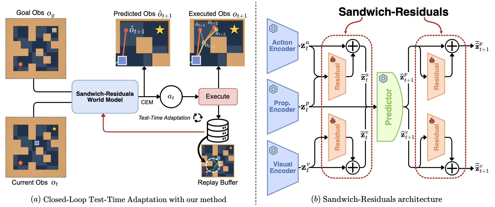

Sandwich-Residuals: Parameter-Efficient Test-time Adaptation of World Models
Paper · under review Results Rollout videos BibTeX
Keep the pretrained world model frozen. Adapt only small residual corrections at the predictor's input and output interfaces, online, from the model's own prediction error.

Abstract
Latent world models enable planning by predicting the effects of actions in a learned representation space, but their predictions can become unreliable when test-time conditions differ from training. Existing test-time adaptation methods update parts of the pretrained model, often modifying millions of parameters and requiring a choice of which internal component to adapt. Sandwich-Residuals keeps the pretrained world model frozen and learns only small residual corrections around the predictor. The residuals are optimized online using the model's self-supervised prediction error and require no rewards, labels, or source-domain data. Across 21 conditions on the AdaJEPA benchmark, the method reaches 1.3× the success rate of the frozen model while retaining 95% of the strongest AdaJEPA variant's performance and adapting 97–99% fewer parameters. Under compound shifts this advantage grows to 1.9× the frozen model, while remaining comparable to internal block adaptation. The same adaptation principle transfers to a DINO-WM model for 3-D manipulation.
Method
The pretrained encoders and predictor stay frozen. Four small residual maps around the predictor (99,520 parameters) are the only weights trained, inside the planning loop, from the model's own prediction error.
One adaptation step per replanning cycle
-
Plan
CEM searches five action blocks in the corrected latent space.
200 candidates, 30 elites, 10 iterations -
Execute
Only the first block runs; the rest warm-start the next plan.
5 simulation steps per block -
Observe
The new frame is encoded and the transition joins the buffer.
5 most recent transitions kept -
Update residuals
One Adam step on the latent prediction error, target under stop-gradient.
lr 10⁻² linear, 5×10⁻⁴ MLP
Results
Four goal-conditioned control tasks, 21 primary conditions and 7 compound shifts, five seeds of 50 episodes per cell. Every number below is regenerated from the run logs.
| Evaluation | Frozen | PredLast | PredFirst | Ours |
|---|---|---|---|---|
| 21 primary conditions | 49.2 | 63.4 | 68.2 | 65.0 |
| 7 compound shifts | 34.5 | 57.8 | 65.2 | 66.0 |
| DINO-WM / OGBench-Cube | 58.7 | 57.8 | 58.0 | 60.0 |
| Adapted parameters | 0 | 9.93M / 3.66M | 9.93M / 3.66M | 99.5K |
Mean success rate (%). Bold marks the highest success rate in each evaluation row; the tinted column is our method. Parameter counts are maze / pushing models. Five seeds × 50 episodes per condition (three seeds for OGBench-Cube).
Success by evaluation group
Mean success within each evaluation subset.
Compound-shift advantage
Seven combined appearance-and-dynamics shifts.
Paired differences
Ours minus each baseline; whiskers show ±1 SE.
View the full result tables
Table I · AdaJEPA primary conditions
Success rate (%), mean ± standard deviation over five seeds of 50 episodes. pl: PredLast; pf: PredFirst. * shape unseen during training. Δ is the gain of ours over the frozen model.
Table II · Compound shifts
Success rate (%), mean ± standard deviation over five seeds of 50 episodes.
Table III · Paired differences
Ours minus each baseline in percentage points, mean ± standard error over (condition, seed) pairs.
Table IV · OGBench-Cube with DINO-WM
Success rate (%), mean ± standard deviation over three seeds of 50 episodes.
Swipe horizontally to compare every method.
Rollouts under compound shift
One episode per illustrated condition, planned by all four models from the same start state and goal, under a compound appearance + dynamics shift. The green trace is the executed path.
Illustrative single episodes chosen to show the qualitative behaviour; they are not representative of the aggregate rates in the tables above.
Which residual does the work?
Frozen is shown for context; Full and the three one-pathway removals correspond to Table V. The dashed line marks the full model.
Medium Maze · blur σ=2 + damping 50×
PushT · blur σ=2 + controller kv 2×
Full adaptation improves over Frozen by 18.8 points in Medium Maze and 47.2 in PushT. The dominant residual pathway depends on the shift: removing the output residuals costs 9.2 points in the maze, whereas removing the input side costs 1.2 and the action residual 2.0. In PushT the pathways are complementary—removing the action residual costs 10.0 points, and removing either predictor-side interface costs 15–16.
This is why the full sandwich is kept fixed rather than tuned per task: when the source of the test-time mismatch is unknown in advance, having both interfaces available recovers the better of the two behaviours.
Transfer to 3-D manipulation
A DINO-WM world model — frozen DINOv2-small encoder, causal ViT predictor over patch tokens — trained on the LeWorldModel OGBench-Cube dataset and planned with the same CEM settings for up to 10 replans. A UR5e arm must move a cube to a target position within 4 cm.
Success by condition
Three seeds of 50 episodes per cell. Ours adapts 99,310 parameters against 3.23M for the AdaJEPA variants.
The same interface-level residual design transfers to DINO-WM; because the model has no proprioceptive input, those terms drop out, leaving 99,310 parameters against 3.23M for the AdaJEPA variants. Our method is the only adapted arm that improves over the frozen model under all three shifts, and the only one with a positive paired mean overall (+1.3 ± 1.5 points across the twelve condition-seed pairs).
The performance differences remain modest. We report the transfer as evidence that the mechanism carries over to a different encoder family and a 3-D task, not as a large gain.
Discussion
Test-time mismatch does not always require changing the internal dynamics model. When the pretrained representation and transition structure remain useful, lightweight interface corrections can recalibrate the model enough for planning without identifying the changed system. The residuals are best viewed as compensators rather than system-identification modules: they only need to make the frozen model useful for planning, not to recover the true dynamics.
The strongest gains occur under large dynamics changes and compound shifts. PredFirst retains a clearer advantage on several pure appearance shifts, particularly in PushT, suggesting that direct adaptation of the pretrained representation remains beneficial when the shift primarily affects visual encoding. Information distorted or lost inside the frozen visual encoder cannot always be recovered downstream, which is the clearest limit of interface-level adaptation.
The evaluation is limited to simulation and to shifts that are approximately stationary within an episode, and reducing the number of trainable parameters does not proportionally reduce adaptation cost, since gradients for the input-side residuals still flow through the frozen predictor. Even so, the method recovers most of the benefit of internal block adaptation while updating 1–3% of the parameters and removing the choice of which block to adapt.
Citation
@misc{anonymous2026sandwich,
title = {Sandwich-Residuals: Parameter-Efficient
Test-time Adaptation of World Models},
author = {Anonymous},
year = {2026}
}